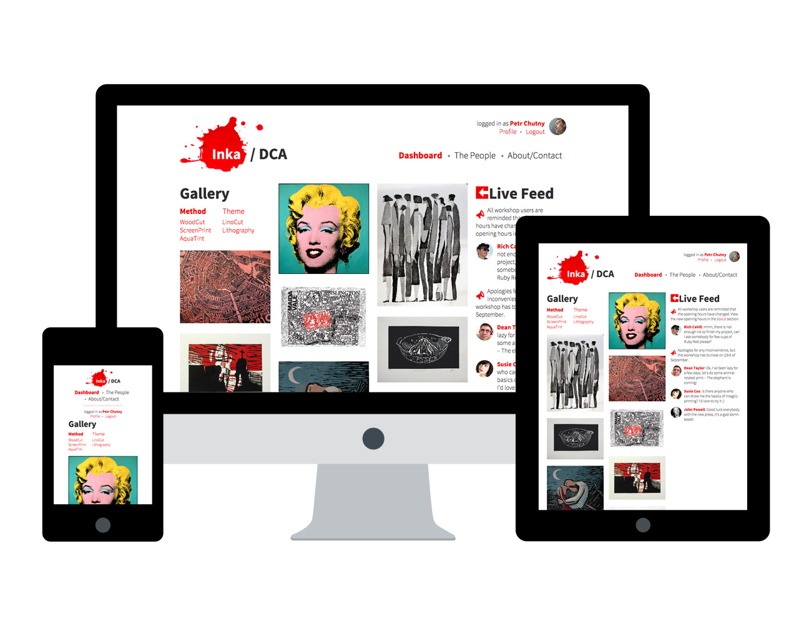

inka
An online community for printmakers
ux | ui | motion
Check out inka here.
Our concept was to offer something to groups who are visiting Dundee Square.
Individually, we observed the environment and the commuters who were engaging with the square. The square is a large area, with shopfronts such as a travel agents and many council buildings, one of which is an information centre. It was noted, that most of Dundee’s patrons took no notice of the square and used it only as a shortcut to access other parts of the city centre. Those that were engaging with the square were primarily surrounding the landmark fountains and tossing coins.
We also gathered stories from groups around the city, who may have used the square, and more specifically the fountains. We gathered this information and created user profiles.
When looking at what’s already our there, the internet offered a plethora of pre-existing communities. These tend to be bloated databases of information. Often, users will discuss specific techniques, ideas, and materials. You are presented with pages upon pages of information, and as a newcomer to the area, it was easy to become lost. Like other community boards, they don’t offer good navigation.
We talked to Mark Hunter, a print technician at DJCAD’s textile department. He gave us some insight into the sort of online services he used. One example of which was YouTube. He talked about how the discussions are of poor quality, and often just ridiculous. Noted.

On paper, we highlighted potential solutions for these problems. We wanted a resource that was visual and content driven. We also wanted to encourage meaningful, good quality conversation. Finally, we wanted to treat Inka as a ‘keyhole view experience’ into the printmakers studio, in order to benefit newcomers. Finally, we wanted the network to be studio specific, using their own identity and branding.
The landing page would have a live feed, giving information and other important details about the studio. It also offers a traditional gallery, which the user can filter to find styles suited to their tastes. These modules can be extended to offer a larger view of each. In the gallery section, the user can click through to find out more information about a specific piece. Here we would have an artist’s avatar ‘stand’ next to their artwork, offering a small descriptor about the work. This starts a line of dialog with the artist themselves. You can go a step deeper, finding out more about the process, by clicking the process button. Similarly to the description page, the avatar would highlight key elements of the artworks process. Users of the site could then comment on certain aspects of the process.

We considered the printmaking environment. It's messy, and unlike a design studio its patrons would unlikely have a computer at their ‘workstation’. We understood the need for the site to be fully responsive and work on any device. Going forward, we kept this in mind when designing the interface.
We gathered content from various sources in order to populate the site, detailing user paths and the ‘artists process’. This offered an understanding of the content of each page.
Using paper, we sketched out each of the different pages we’d need to create. We looked at pre-existing paradigms and settled on our solutions. These decisions were made and our ideas were then visualised within photoshop and ready for the final stages.
This is a visual 'walkthrough' of our process with inka, as it was the day we finished the project.